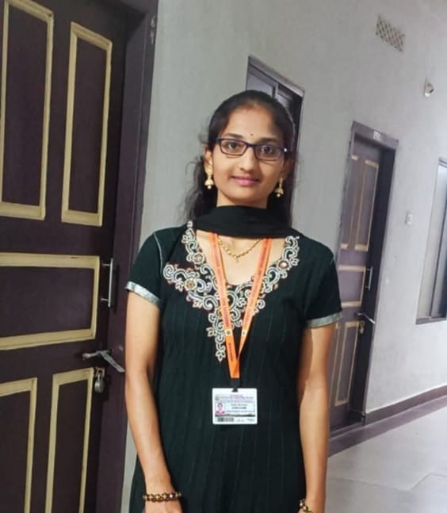

ABOUT ME

VAKA MANASA
I am a passionate web developer with experience in HTML, CSS, and JavaScript. I am always looking for new challenges and opportunities to learn and grow. In my free time, I enjoy playing basketball and learning new languages.
EDUCATION
- Bachelor of Technology (B.TECH)
-S.R.Gudlavalleru Engineering College , Gudlavalleru
- Intermediate (MPC)
-Narayana Junior College , Ongole
- Board of Secondary Education , A.P (SSC)
-Narayana Public School , Ongole
PROJECTS
- PARENT PORTAL CONNECT
-Languages used→HTML , CSS , MySql
- MUSIC RECOMMENDER SYSTEM
-Languages used→HTML , CSS , MECHINE LEARNING ALGORITHMS